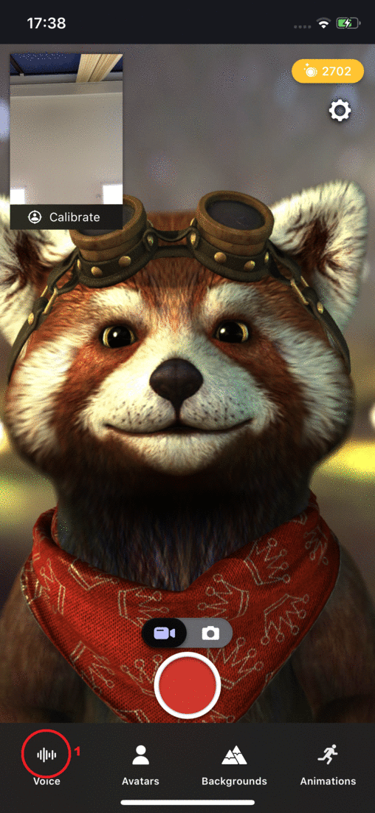

Animaze iPhone: How to use voice effects?

1. To use voice effects, first tap on the icon.
2. Select a voice effect from the list.
3. Tap on  to load the voice effect.
to load the voice effect.
4. The voice effects icon changed to reflect that a voice effects are active: .
5. Record your video and share it with your friends!